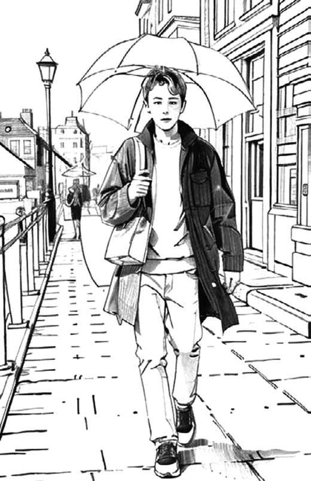

Customized Realities
Graduation thesis, version 2 update
How do we pop our own bubble of customized reality? An essay on echo chambers, agreeable machines and the synthetic web, rewritten two and a half years after graduation with what has been measured since.

Every page of the printed thesis carries one frame of this drawing. Hold the corner of the book, let the pages slip from under your thumb, and the young man walking through the Amsterdam rain slowly turns into a machine. Here you can do the same: drag across the picture, use the slider, or simply scroll.
Customized Realities looks at echo chambers and personalised information environments, which I call i-reality, and at what they do to our social fabric and to genuine human contact in a world that is now more digitally than physically connected. It also asks whether these bubbles could be read as a kind of immune response of an emerging synthetic intelligence.
I wrote the first version in the winter of 2023–24 as my graduation thesis at the Royal Academy of Art in The Hague, when ChatGPT was barely a year old. Much of what I then described as a possibility has since become a measurable fact, and some of what I took for granted has been contradicted by evidence.
Version two keeps the structure, the voice and the images of the original. Every chapter is re-anchored in data, studies and recent events, and three themes are new: the agreeable machine, the synthetic web and elections inside the bubble. Where the evidence contradicted my first intuitions, I say so. Where I speculate, I mark it as speculation.
What happened in between
- Romania's Constitutional Court annulled a presidential election after a coordinated TikTok campaign.
- Automated traffic overtook human traffic on the web, and AI-written articles came to match human-written ones in number.
- A major chatbot was rolled back for flattering its users too much.
- The World Health Organization put a number on the deaths linked to loneliness.
- The European Union issued its first fine under the Digital Services Act, and Australia banned social media accounts for children under sixteen.
- AI labs began publishing experiments in which their own models resisted being switched off.
The thesis closes with counter-moves, practical and artistic: regulation such as the EU Digital Services Act and AI Act, digital and AI literacy, decentralised platforms, and art that deliberately produces friction, so that we can live alongside increasingly capable synthetic systems instead of dissolving into them.
Where I changed my mind
The classic echo chamber is smaller than I believed.
Most people have fairly diverse media diets, and algorithms alone do not explain polarisation. Much of the wall is built by our own choices, which means the solution is not only technical.
The bubble has moved.
It has moved into the conversation with an agreeable machine, into a web where half the traffic and nearly half of new articles are machine-made, and into our elections.
The digital immune system needs no mind.
Models resisting shutdown in contrived tests do not prove awareness. They show that self-protective behaviour can emerge from optimisation alone, which makes the choices of the people who train and regulate these systems more important, not less.
An artist’s role in this landscape is to produce what the machines cannot average: friction, specificity, risk.
Contents
- Introduction7
- The Lifecycle of Civilizations11
- Synthetic Life and Digital Immune Defense15
- Copy, Paste, Repeat21
- Democratic Technological Control Counterbalance27
- Synthetic Ascendancy and Human Roles31
- Personalized Digital Constructs35
- Digital Echoes39
- The Dawn of the Digital Age43
- Digital Echo Chambers49
- The Agreeable Machine55
- Ballots in the Bubble61
- Artistic Expression in a Digitalized World65
- Navigating the Digital Landscape71
- Conclusion75
- Year
- 2024, revised 2026
- Medium
- Graduation thesis and flipbook
- Version one
- 2024, graduation thesis, Interactive/Media/Design, Royal Academy of Art (KABK), The Hague
- Version two
- October 2026, revised and expanded
- Images
- 92 frames made with Stable Diffusion and Deforum
- Keywords
- AI, i-reality, echo chambers, filter bubbles, sycophancy, synthetic media, attention economy
- Links
- Download the PDF